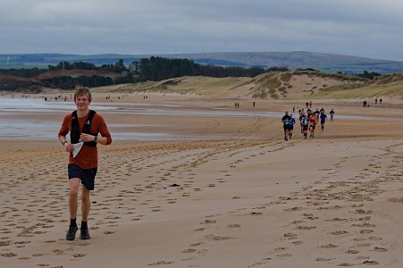

Hi, I'm Owen. I'm a computer science and mathematics undergraduate at the University of Edinburgh.
I began developing about five years ago,
and since then I've taught myself a bunch of different languages as my interests varied,
creating many little projects as I went along - many of which you can find here!

As well as messing around with code, I love the outdoors.
I particularly enjoy running and rock climbing.
This passion has lead me to some of my fondest personal achievements
including finishing 10th in a 30-mile mountain marathon, and
summitting Mount Kilimanjaro after fundraising £2820 for deprived Kenyan communities.
The photo on the left is from a recent trail half marathon where I set a new personal best!